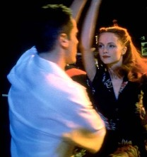

|
|
|
| Movie Credits | Buy It! |
Swingers
Review by Eddie Cockrell
 |
Directed by Doug Sliman. Starring Jon Favreau, Screenplay by Jon Favreau. |
Relatively free from the tyranny of formula and convention, American independent films can often be refreshing in spite of themselves. Now that such powerful specialty distributors as Fine Line, October, Fox Searchlight and especially Miramax Films are buying, enhancing and releasing low-budget independent fare (Clerks and The Brothers McMullen being perhaps the most pervasive recent examples) in significant numbers, the average American moviegoer has a sterling opportunity to sample what young, motivated filmmakers are doing away from corporate control. Both engaging and self-indulgent, Swingers is one of the most recent examples of this new indie largesse and a splendid case study of what is good and bad about the boomlet.
Written by and starring a struggling young actor named Jon Favreau (who shed 75 pounds since appearing as Sean Astin's classmate D-Bob in 1993's Rudy), Swingers illuminates the Los Angeles singles scene in which a struggling young actor must rise above his remorse over a busted relationship back east to live and love again.
He sets about this task in a half-hearted way, goaded on by his hyperactive young hipster pal Trent (Vince Vaughn, a pal of Favreau's who was also in Rudy), with whom he cruises various L.A. bars. But while Trent is always looking for "babies," (women, according the film's half real, half invented slang), Mike can't get over his girlfriend and is anxious to talk about her to anyone--particularly the women they do manage to buttonhole on their various wanderings. The resolution of this slender conflict, while ironic, is more the result of luck than skill.
On the plus side, Swingers has the energy and earnestness that marks dependable up-and-coming talent. First-time director Doug Liman, who bought the film rights from Favreau for a pittance after the actor refused to sell out to studios looking for a star vehicle, served as his own cinematographer and stages the action with wit and imagination. And the film serves as a fine primer for some of the more spectacular retro watering holes to be found in the City of Angels, particularly the semi-legendary fifties decor of the Dresden (where Jack Nicholson also staged some of the action in The Two Jakes).
But Favreau the writer favors Favreau the actor to the detriment of the material. Just when the leisurely pace seems to promise raunchy insights on male bonding and mating rituals, the film bogs down in Mike's moping. Worse still, Trent's immaturity and obnoxiousness undercuts any audience sympathy for him. And after the first few reels, the jargon wears thin (Nadset this ain't).
Finally, while fluidly made and enthusiastically played, like an eager young single with one too many martoonis under his belt, Swingers isn't nearly as cool as it imagines itself to be. And while Mike himself is the subject of a potentially good film about shy, decent guys trying to make it in a city where there's much more emphasis placed on sizzle than steak, the frat-house sensibility of Swingers never gives that story room to breathe. Unfortunately, it seems to be content to be an affable, drawn-out, post-modern episode of "Love, American Style." While that may be fine for a low-budget debut -- the film was produced for a quarter of a million dollars -- it is to be hoped that the subsequent careers of those who made Swingers reveals the film for what it is: an overeager, slightly naive calling card. Nothing to be ashamed of, certainly, but nothing to write home about, either.
Contents | Features | Reviews | Books | Archives | Store
Copyright © 1999 by Nitrate Productions, Inc./em>